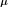
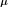

Random Mixture: affine combination of independent univariate distributions¶
A multivariate random variable  may be defined as an
affine transform of
may be defined as an
affine transform of  independent univariate random variable, as
follows:
independent univariate random variable, as
follows:
(1)¶
where is a deterministic vector with
 , a
deterministic matrix and are some
independent univariate distributions.
, a
deterministic matrix and are some
independent univariate distributions.
In such a case, it is possible to evaluate directly the distribution of
and then to ask any request compatible
with a distribution: moments, probability and cumulative density
functions, quantiles (in dimension 1 only) …
Evaluation of the probability density function of the Random Mixture
As the univariate random variables  are independent, the
characteristic function of , denoted
are independent, the
characteristic function of , denoted  , is
easily defined from the characteristic function of denoted
as follows :
, is
easily defined from the characteristic function of denoted
as follows :
evaluated, it is possible to evaluate the
probability density function of  , denoted
, denoted  :
several techniques are possible, as the inversion of the Fourier
transformation. This technique is not easy to implement.
:
several techniques are possible, as the inversion of the Fourier
transformation. This technique is not easy to implement.(2)¶
. Thus the nested sums of the left
term of (2) are reduced to the central term
: the left term is approximatively equal to
 . and
. We denote and
. and
. We denote and  respectively
the density and the characteristic function of the multivariate normal
distribution with the same mean  and same covariance
matrix
respectively
the density and the characteristic function of the multivariate normal
distribution with the same mean  and same covariance
matrix  as the random mixture. By applying this
multivariate normal distribution to the equation , we obtain by
subtraction:
as the random mixture. By applying this
multivariate normal distribution to the equation , we obtain by
subtraction:
where , ,
tends to the normal distribution density
 , which will drastically reduce
, which will drastically reduce  . The sum on
will become the most CPU-intensive part, because in the
general case we will have to keep more terms than the central one in
this sum, since the parameters were
calibrated with respect to
. The sum on
will become the most CPU-intensive part, because in the
general case we will have to keep more terms than the central one in
this sum, since the parameters were
calibrated with respect to  and not .
and not .The parameters are calibrated using the following formula:

where and
 ,
,  are respectively the number of standard
deviations covered by the marginal distribution (
are respectively the number of standard
deviations covered by the marginal distribution ( by
default) and the number of marginal deviations beyond
which the density is negligible ( by default).
by
default) and the number of marginal deviations beyond
which the density is negligible ( by default).
The parameter is dynamically calibrated: we start with
then we double value until the total contribution
of the additional terms is negligible.
Evaluation of the moments of the Random Mixture
The relation (1) enables to evaluate all the moments of the random mixture, if mathematically defined. For example, we have:
Computation on a regular grid
The interest is to compute the density function on a regular grid. Purposes are to get an approximation quickly. The regular grid is of form:
By denoting :
for which the term is the most CPU consuming. This term rewrites:
with:
The aim is to rewrite the previous expression as a  - discrete
Fourier transform, in order to apply Fast Fourier Transform (FFT) for
its evaluation.
- discrete
Fourier transform, in order to apply Fast Fourier Transform (FFT) for
its evaluation.
We set and and . For convenience, we introduce the functions:
We use  instead of
instead of  in this function to simplify
expressions below.
in this function to simplify
expressions below.
We obtain:
For performance reasons, we want to use the discrete Fourier transform with the following convention in dimension 1:
which extension to dimensions 2 and 3 are respectively:

We decompose sums of on the interval ![[-N,N]](../../_images/math/a91169440526e69b84299f220a3e3fe359e4543b.svg) into three parts:
into three parts:
If we already computed  for dimension
for dimension  , then the
middle term in this sum is trivial.
, then the
middle term in this sum is trivial.
To compute the last sum of equation, we apply a change of variable :
Equation gives:
Thus
To compute the first sum of equation, we apply a change of variable
 :
:
Equation gives:
Thus:
To summarize:
- In order to compute sum from
 to , we multiply
by and consider
to , we multiply
by and consider
- In order to compute sum from to
 , we
consider
, we
consider
API:
- See
RandomMixture
Examples:
- See /examples/probabilistic_modeling/random_mixture_distribution
- See /examples/probabilistic_modeling/random_mixture_distribution_discrete
References:
- Abate, J. and Whitt, W. (1992). The Fourier-series method for inverting transforms of probability distributions. Queueing Systems 10, 5–88., 1992, formula 5.5.